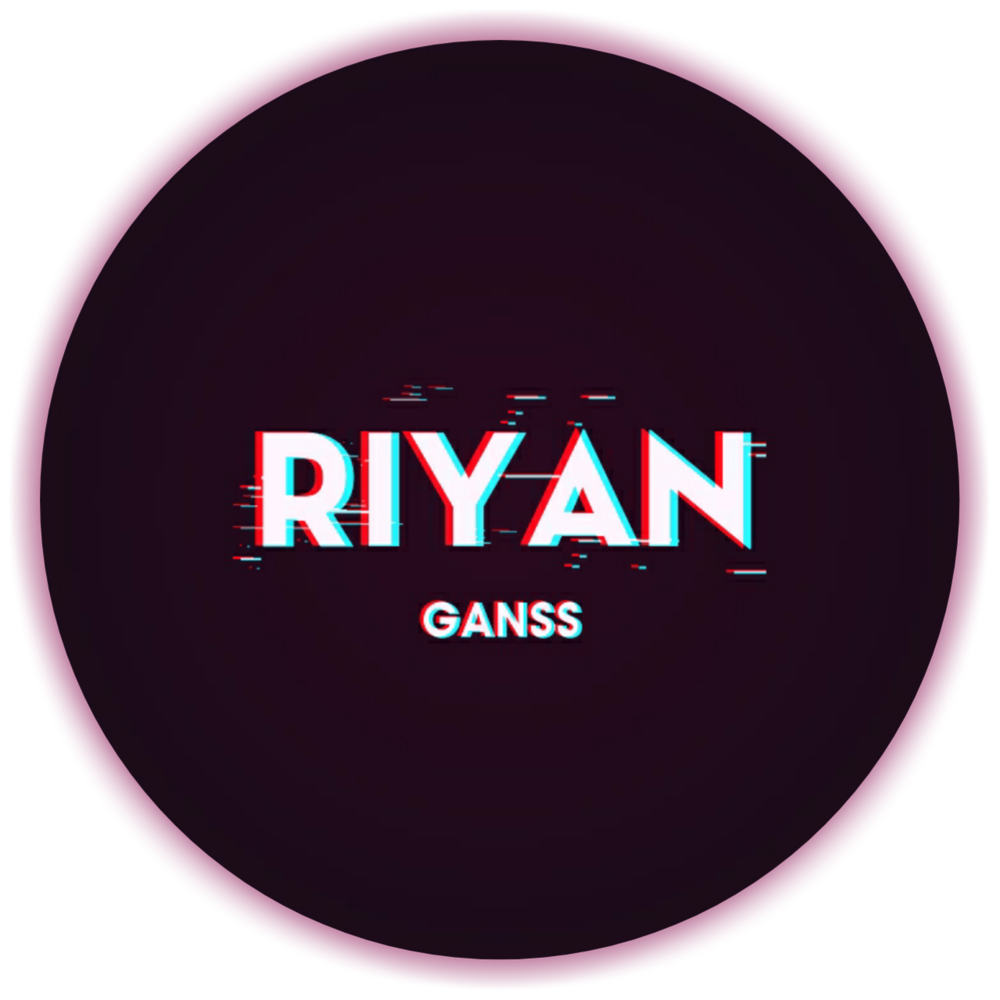

Touched By Riyan
"Tak ada rahasia untuk menggapai kesuksesan. Sukses itu dapat terjadi karena persiapan, kerja keras dan mau belajar dari kegagalan."
Thanks To
「
Lindow - Ehan - Dayu - Merta
」
© Follow
@yannnnn.zz_
About Me :)
©copyright 2k21